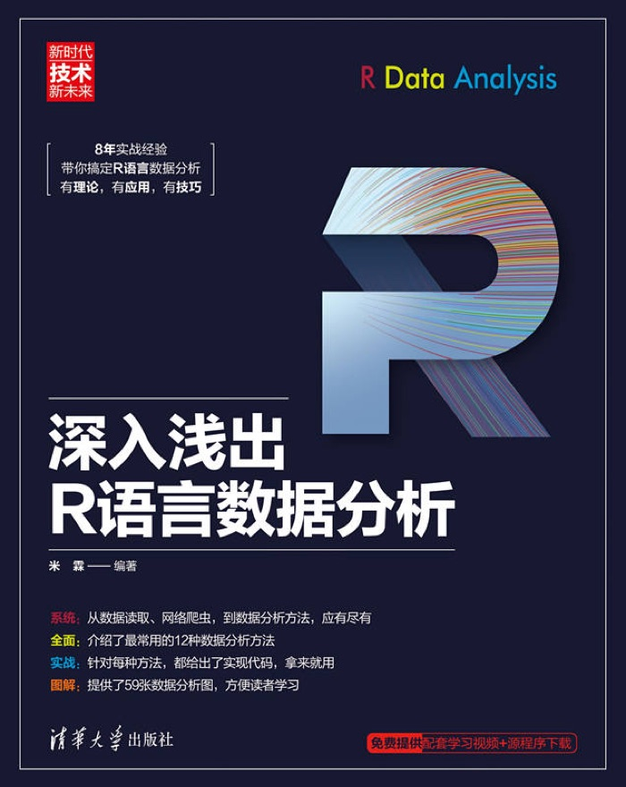

01 / Thought02 / Structure03 / Form
From Thought to Form.
I'm Mi Lin (Liam). Writing books and guides is how I think problems through; building software and atlases is how I give ideas form; open-sourcing and experimenting is how I share them.

Website / Tool
LookbookA visual index of design systems
Over 80 design systems from well-known products, rendered as pages you can browse, compare and take away.
80+design systems
10categories
2interface languages

Aide · A local AI entry point for the desktopSoftware / macOS appCall up local AI with a Mac shortcut for selected text, screenshots and desktop tasks.

Research2Video · 研映 · From research to videoSoftware / WorkflowA local creative workspace for recurring research, scripts, video production and multi-platform publishing.

Radar · An information radarSoftware / macOS appDescribe what to follow in plain language, collect on a schedule, and get events that link back to the source.

PersonalSpace · A native macOS personal digital spaceSoftware / macOS appA local-first personal library: read-only access to folders you authorize, search and preview, and reminders for what needs doing.

DISCOVERY-TAXONOMY · Break Unknown UnknownWebsite / exploration toolFind a direction worth exploring: compare old assumptions with new shifts, then start with a fillable AI seed prompt.
More work Super Individual Toolbox · AI Interactive Playground · Wenjian · AI Task Gallery · Prompt Taxonomy · Atlas Methods · Communicative Acts · Semantic Direction Taxonomy · Application Atlas · P Atlas All works →

Deep Dive into Data Analysis with RTsinghua University Press · 2020

Data Visualization with R in PracticeChina Machine Press · 2020

Statistical Analysis with R in PracticeBeijing Institute of Technology Press · 2023

Getting Started with SPSS and Data Analysis in PracticeChemical Industry Press · 2025
01ThoughtsThoughts · Personal thinking archiveAn evolving archive of observations, reasoning, evidence and conclusions, written as articles that can be revisited and revised.Read ↗02AI engineeringAI Systems EngineeringFrom model calls, tools and evaluation to agents, RAG, serving and post-training: how to turn a model into a working AI system.Read ↗03CognitionCognitive Language EngineeringLanguage that serves thinking, expression, collaboration and action: seven principles, four models, and operators you can apply directly.Read ↗04AgentsAgent CourseHow to design, build, debug, evaluate and productionize agent systems, understanding the mechanics without leaning on framework abstractions.Read ↗
SaaS GroveGitHubA SaaS discovery and research platform for finding real open-source and commercial products by type and comparing alternatives.
View source ↗World Classification AtlasGitHubBuild a world classification atlas from existing standards, preserving original structures, versions and sources for domain-by-domain comparison.
View source ↗SkillsWebA personal library of reusable Skills and examples for mnemonic encoding, music-video creation and independent judgment.
Visit website ↗